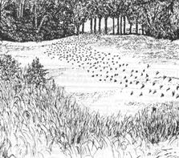
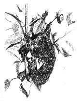

A master beekeeper reflects on the beauties, the wonders, the excitement, and the meanings of...
Copyright ©1974 by Richard Taylor, from the book The Joys of Beekeeping , and reprinted through special arrangement with St. Martin's Press, Inc., 175 Fifth Avenue, New York, New York 10010.
A beekeeper has few memories that rival those of the swarms he has seen. It is a thrill unique to this craft. It seems to me I remember all those I have ever dealt with, hundreds by now. My thoughts still go back to a distant boyhood, and I see myself bicycling home, barefooted, a large swarm of bees enclosed in a burlap bag and held at arm's length so that none would be injured as I pedaled along. The thrill and fascination that filled me then, as I watched large swarms stream into hives, has never weakened. I still sit in silent wonder, when now, alone, in one of my yards, I hive a new swarm. It follows exactly the pattern established millions of years ago. It is at this point in the colony's cycle that the psychology of the bees becomes most wondrous. It is now that the habits and orientations that have governed their every movement from the moment they first took wing are abruptly halted, to be replaced by a totally new orientation, as though the former had never existed. It is as though they were determined by a destiny laid down in advance. The phenomenon draws a philosopher's attention to the mystery that inhabits every pocket of creation. We see only a small part of the surface of things. The rest will be forever hidden from us, to be appreciated for its felt, but unfathomed, presence....
Swarming is, of course, essential not only to the survival of the species, but also to nature itself, for without bees, the many plantsboth wild and cultivated-that depend upon them for the viability of their seed would also be threatened with extinction.
There seems to be no practical way of preventing swarming, and sooner or later beekeepers need to conquer their anxiety over it. One must here, as in so many things, be content, with something less than perfection, doing what one can to reduce swarming and, beyond that, hoping for the best....
Bees are not like the domesticated mammals and fowl over which human beings have so totally triumphed. They are still untarried and uncorrupted. I hope they will always remain so. If men were to conquer the bees, bending them entirely to human ends, then there would doubtless be rewards of some sort in terms of increased honey production. But something very precious would be lost. The bees we know care no more for our hives than for a hollow tree; they are as much at home in one as the other, and during the period of swarming the, are ready to abandon either for the other. The step to nature is for them a very short one. Indeed, it does not even exist. By inducing the bees to make their homes in the hives we provide, we gain control over their location and enable ourselves to reach into those homes and take what we will, but we gain little control over the bees themselves.
I profoundly hope it will always be so. The claims of human beings are not the only ones that are made in the natural realm, and there is something to be said for the spirit of adaptation and acceptance instead of conquest. We have conquered so much, and in the process laid waste to so much. If, now, this tiny insect adamantly refuses to yield its own nature to us, then a certain balance of things will remain as it should. The beekeeper will always be there, with the hum of the oblivious bees overhead. When he sees a prime swarm fill the air and move off to the woods, following the pattern set millions of years ago, he can draw from the sight an inner satisfaction that transcends consideration of material gain.
A beekeeper can hardly sit still or put his mind to any other work at the peak of the swarming season. Over the years I have managed to bring this anxiety under control to some extent, at least to the point of more or less putting out of my mind what might be happening in my more distant yards when it is not possible to find out. Nothing is gained by imagining large prime swarms there. Experience has taught me that if I rush to my yards, summoned by such specters, I will probably find no swarms anyway. Still, it is not easy to relax on one of those warm spring days when I am tied to other responsibilities. The rest of the world goes on in a state of relaxed enjoyment, as though nothing were different, while a beekeeper feels as though he were sitting on pins.
Sometimes, though, that warm spring breaks on just the day I have set aside for a tour of my yards, and this, if all goes tolerably well, is like heaven. There is a thrill in gathering swarms, especially if I have suffered winter losses and have some hives standing empty. At this time of the year every apiary can be a source of surprises. I might find an enormous swarm, several, none at all, or perhaps three or four tiny ones clustered here and there....
The unique reward of any swarm, particularly a large one, is seeing it. Of course, a swarm gathered early in the season represents a potential honey crop of significant value, but a beekeeper who lets his thoughts stop there views his craft with an astigmatism. The manner in which a swarm takes over a new hive is always the same, and the thrill of seeing it is always the same, even though it may be the hundredth time.
I dump a prodigious mass of bees in front of a hive, as casually as if it were a bushel of beans, usually onto a cloth that I have spread to prevent entanglement with grass and weeds. There is a momentary confusion as bees move aimlessly and a few of them take wing. Then a few approach the hive, recognize its potentiality, and signal to others by raising their tails high and fanning their wings. The signal is quickly picked up by the other bees, which duplicate it, and within seconds most of them are facing the hive, heads low and tails high in the air as though bowing to Mecca. The mass of bees starts approaching the hive, slowly at first, but gathering speed as they come closer and start pouring in....
This is their home, from that moment and very likely for decades to come. What was before a lifeless thing, without significance, becomes now the foundation of their city and their destiny. From miles around they will henceforth return to this spot, and this one alone. In the course of a few minutes it has become the center of their universe, any other object on earth having meaning for them only in relation to it. They will build it up and protect it with their lives. Nothing will be permitted to befoul this hive, nothing other than a bee will be permitted to enter it, and indeed no worker bee will be permitted to enter except one belonging to this hive. As these bees themselves perish and are replaced by new generations, they will fall outside the hive or be quickly carried out.
The ease with which a swarm is hived is astonishing, but, of course, not every swarm gets hived. Sometimes the swarm is high, inviting the beekeeper to risk a broken neck. More likely, he simply does not see it until too late. Sometimes I first learn of the presence of a swarm nearby by hearing it take wing, and sometimes a swarm takes wing right before my eyes just as I am making preparations to gather it, and then, as all the literature of beekeeping expresses it, "absconds" over the horizon while I watch in dismay.
It is an inspiring spectacle, if one can overcome frustration sufficiently to appreciate it. The cluster of bees that has hung there sometimes for days, until this moment placid, quiescent, hardly resembling a living object, suddenly begins to disintegrate, as though it had received a signal. Within a minute the air is filled with a vast cloud of bees hovering at the spot and keeping themselves together as one. The purpose of this is to insure that the queen is present, to make sure she has had time to take wing and join them. The destiny of the colony for generations and, in fact, for eternity rests in the tiny cells of her body, and there alone. Without her, the swarm would be meaningless. Soon the cloud rises and expands, the individual bees threading their way within it in a pattern of zigzags. It begins to drift away, and for a few minutes one can accompany it over the meadow. Then as they become assured that all is as it should be, the bees gather speed and vanish over the hillside, leaving behind the vacuum of silence, as though nothing had happened. In the presence of such a sight a beekeeper can rise above his limited animality and, for a moment, sense, if not understand, the eternal assurances at which nature forever hints.
EDITOR'S NOTE. This article was excerpted from Mr. Taylor's book, The Joys of Beekeeping, a 116-page paperback that's available-for $5.95 plus $1.50 shipping and handling-from St. Martin's Press, Dept. TMEN, 175 Fifth Avenue, New York, New York 10010.
.I have worked up a few simple swarm-gathering tools and techniques, and the tools are always at hand during the swarming season. One of these is a strong ten-foot pole with a heavy hook screwed into its end. This brings most swarms within my reach, though sometimes I must also stand on top of my truck. Another device, and without doubt the best single discovery of my beekeeping career, is an enormous funnel, about two feet wide at the top and narrowing to about four inches at the neck. Rather than hiving swarms where and when they are found-which is strangely a common practice among beekeepers-I merely dislodge them into screened swarm boxes, using the funnel, then hive them at times and places of my own convenience. In addition to these two special swarmgathering implements, I have the usual ones-pruners, both large and small, a small buck saw, a length of cord or clothesline, and a few small queen cages.
Ideally a swarm should select as its clustering point the end of a fairly small branch of worthless sapling, about four feet from the ground. And actually, swarms do that, more or less, fairly often. I then merely prune the branch near the cluster, trim away twigs and leaves, and either dislodge the swarm into one of my swarm boxes or carry it to a nearby hive in need of occupants and dislodge it there. If I use a swarm box, I can cart it home and, if necessary, store it in my cool basement for a few days, then deal with it at my leisure. The bees do not mind this in the slightest, just so long as their queen is with them.
Usually, however, swarms are found clustered in less convenient places-in a thornbush, for example, or a tangle of vines. I prune it away as best I can, taking care that the cluster does not get broken up or scattered if this can be helped. If at all possible, in such cases it is best to get the funnel and swarm box under the bees, then shake them all in as well as one can. Bees that are left outside will cluster on the outside of the cage in a few minutes, provided, again, that the queen is inside it.
Of course, the swarm is likely to be overhead The pole will usually bring it down to within reach. If it would require a ladder to get the swarm, I usually force myself to ignore it, to pretend I never saw it, and proceed with other things. No swarm is worth the risk of getting hurt.
|
 |
 |
|